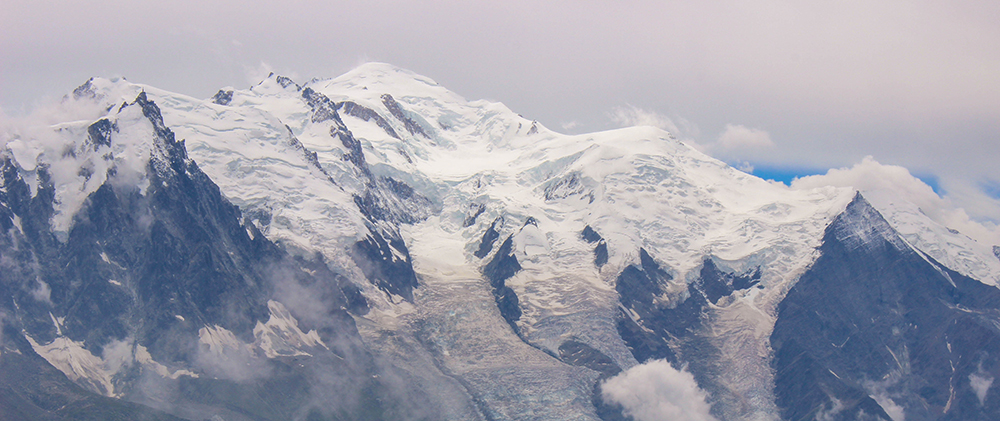
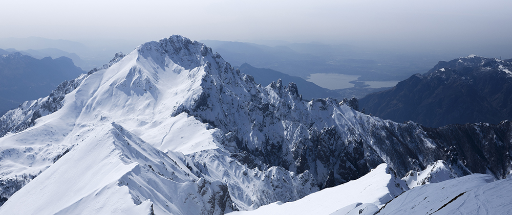
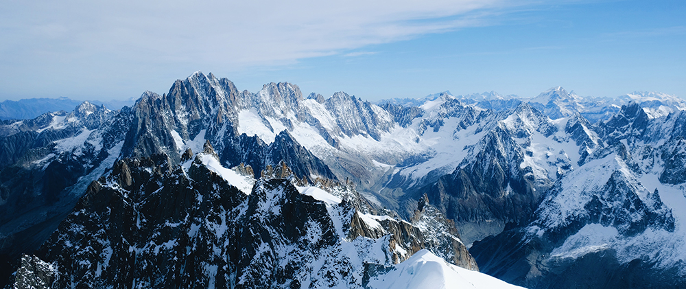
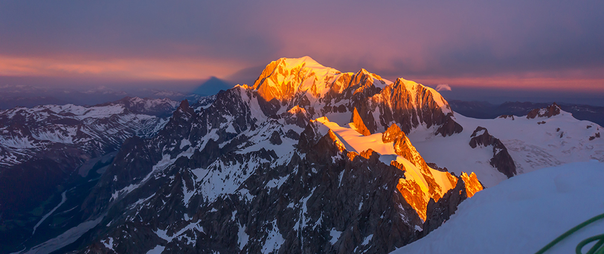

Mont Blanc
Mont Blanc leży w masywie o tej samej nazwie. Mont Blanc mierzący 4807 m. jest wysunięty na południowo - wschodnim krańcu alpejskiego łańcucha i jest najwyższym szczytem całej Europy. Chociaż, współcześnie sieć kolejek linowych skróciła kilka szlaków, Mont Blanc wciąż pozostaje niebezpieczny. Gwałtowne załamanie pogody może zmienić jego stoki w bezlitosne piekło. Nawet łatwe podejście do schroniska może kryć nieoczekiwane niebezpieczeństwa.
Mont Blanc zbudowany jest głównie ze skał krystalicznych. Tworzy rozbudowany masyw, rozcięty licznymi dolinami glacjalnymi (17 lodowców o łącznej powierzchni 200 km²). Jest młodym, stale rosnącym masywem górskim (przyrost roczny wysokości wynosi ok. 2-3 mm).


Wysokość góry zmienia się też o kilka metrów ze względu na grubość czapy lodowej pokrywającej szczyt. Przez większość XX wieku na mapach podawana była wartość 4807 m n.p.m. Od początku XXI wieku wysokość szczytu postanowiono mierzyć co dwa lata. Wynik pomiaru z roku 2001 wyniósł 4810,40 m n.p.m.; pomiar we wrześniu 2003 dał wynik 4808,45 m n.p.m. W roku 2005 wyniósł 4808,75 m n.p.m. Pomiary z 2007 roku wykazały, iż mimo ocieplenia klimatu góra w sumie „urosła” niecałe 3 metry, gdyż ocieplenie to spowodowało zwiększone opady śniegu nad masywem i tym samym zwiększenie czapy lodowej na wierzchołku co dało górze wysokość 4810,90 m n.p.m. Pomiary z września 2009 roku wykazały wysokość 4810,45 m n.p.m.
W Alpach, coraz większa liczba turystów oraz wypadków na szlaku zaowocowała wprowadzeniem nowych przepisów w 2019 roku. Od teraz, aby wejść na górę bez przewodnika, będzie trzeba uzyskać przepustkę w biurze informacji turystycznej. Władze Chamonix wprowadziły nowe wymagania w celu zapewnienia bezpieczeństwa wszystkich turystów.
Aby wejść na szlak na Mont Black, potrzebna będzie teraz przepustka. W biurze informacji turystycznej należy przedstawić plan wejścia oraz potwierdzenie rezerwacji noclegu w Gouter. Jeśli chcesz wspiąć się na Mont Blanc, musisz także przedstawić dokument potwierdzający udział w szkoleniu z zakresu alpinizmu lub posiadać certyfikat ukończenia kursu. Jeśli spełniasz te wymagania, otrzymasz przepustkę, która umożliwi Ci wejście na szlak.

